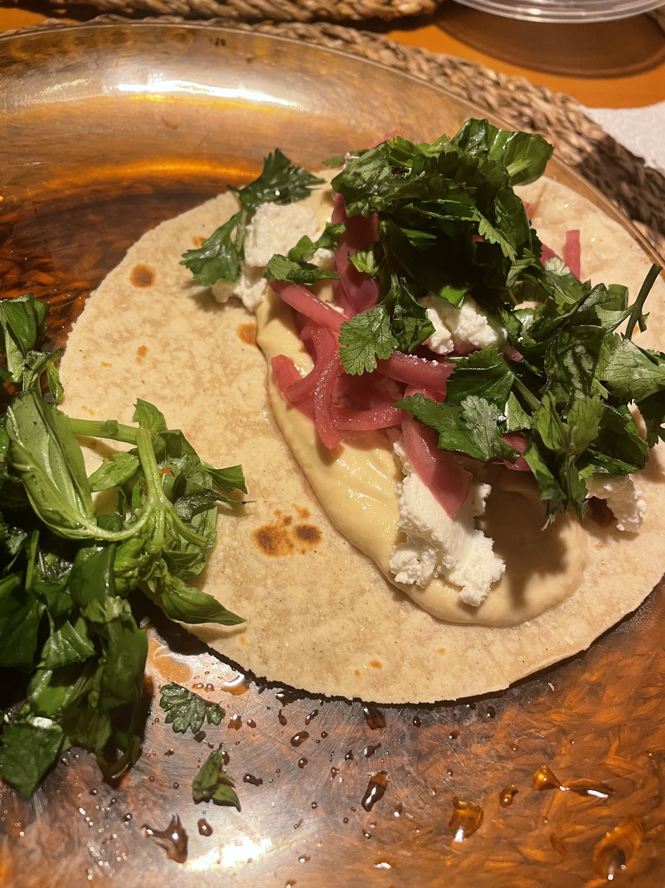

Tortita de maíz con hummus de lenteja, ricotta, cebolla encurtida, cilantro y albahaca
Ingredients
1×
- 1 tortita de maíz
- 3 cdas de hummus de lenteja
- 2 cdas de ricotta
- cebolla encurtida
- cilantro
- albahaca fresca

Preparación
Paso 1
Calentar 1 tortita de maíz en la sartén.
Paso 2
Untar con 3 cdas de hummus de lenteja y poner por encima 2 cdas de ricotta, cebolla encurtida, cilantro y albahaca fresca.